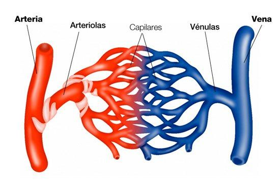
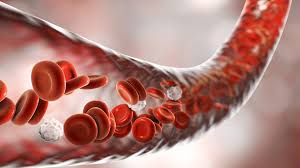
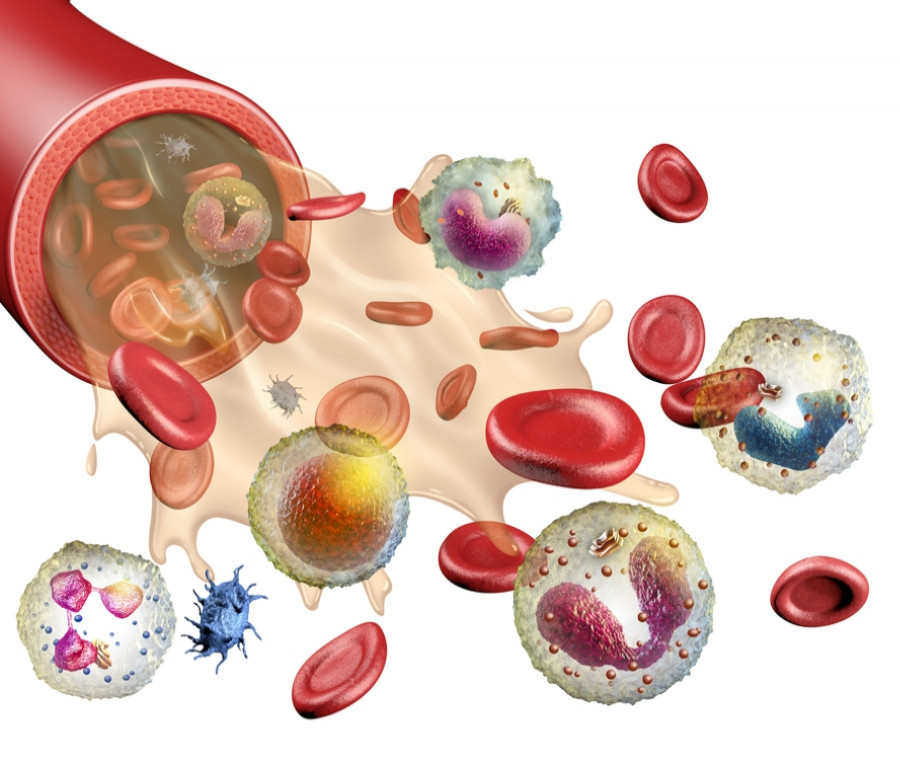
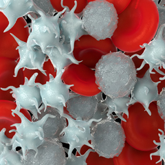

Il percorso di Scienze Motorie svolto quest'anno è stato lo stimolo per far nascere in me un profondo e inaspettato interesse verso l'anatomia e la fisiologia umana. Gli argomenti trattati in classe mi hanno spinto a voler approfondire i meccanismi complessi e precisi che regolano la vita e il funzionamento del nostro organismo.
Il cuore e il sistema cardiocircolatorio
L'attention si è concentrata principalmente sul cuore e sul sistema cardiocircolatorio, una macchina biologica straordinaria. Lo studio del ciclo cardiaco, del percorso del flusso sanguigno e del ruolo fondamentale delle valvole mi ha permesso di comprendere la precisione millimetrica che si cela dietro a ogni singolo battito cardiaco.
L'anatomia cardiaca e la doppia circolazione
Dal punto di vista strutturale, il cuore è diviso dal setto in due metà (destra e sinistra), ciascuna formata da un atrio e un ventricolo. Questa anatomia supporta una doppia circolazione: la parte destra riceve il sangue deossigenato dal corpo e lo indirizza ai polmoni, mentre la parte sinistra accoglie il sangue ossigenato di ritorno dai polmoni e lo pompa nell'intero organismo. Le valvole cardiache assicurano l'unidirezionalità di questo flusso.
La rete di trasporto: I Vasi Sanguigni
Il sangue si muove nel corpo attraverso una fitta rete stradale divisa in tre tipologie di vasi, ciascuna specializzata per sostenere anche lo sforzo fisico e sportivo:
- Arterie: Trasportano il sangue ricco di ossigeno dal cuore ai muscoli. Hanno pareti spesse ed elastiche per resistere alla forte pressione cardiaca.
- Vene: Riportano al cuore il sangue carico di scarti. Avendo una pressione bassa, sfruttano la contrazione dei muscoli motori (pompa muscolare) e speciali valvole a nido d'ape per far risalire il sangue contro la gravità.
- Capillari: Vasi microscopici con pareti sottilissime dove avviene lo scambio effettivo: cedono ossigeno e nutrimento alle cellule muscolari e ne prelevano l'anidride carbonica.

La composizione del sangue e le sue funzioni
L'analisi si è poi estesa alla composizione del sangue, un tessuto fluido composto da plasma e da elementi cellulari fondamentali per l'equilibrio dell'organismo e per le prestazioni atletiche:

Globuli Rossi
Sono le cellule più numerose, ricche di emoglobina. Legano e trasportano l'ossigeno dai polmoni ai muscoli sotto sforzo, determinando la nostra capacità di resistenza alla fatica.

Globuli Bianchi
Costituiscono la nostra difesa immunitaria. Combattono le infezioni distruggendo virus e batteri; l'attività fisica regolare ne stimola e ne migliora l'efficienza generale.

Piastrine
Frammenti di cellule vitali per la coagulazione. In caso di ferite o escoriazioni durante il movimento, si accumulano per bloccare l'emorragia e avviare la cicatrizzazione.
Trasfusioni, compatibilità e agglutinazione
Infine, di grande impatto è stato lo studio della compatibilità ematica nelle trasfusioni. L'introduzione di sangue non compatibile scatena l'agglutinazione, una reazione immunitaria gravissima in cui i globuli rossi formano ammassi potenzialmente fatali. Questo argomento evidenzia l'importanza clinica e vitale della classificazione dei gruppi sanguigni e del fattore Rh.